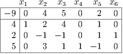
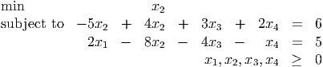
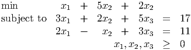
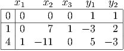
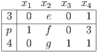
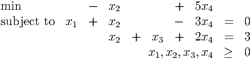

Math Models of Operations Research, MATP 4700/ ISYE 4770.
First Exam, Tuesday, September 28, 2010.
You may use any result from your notes or a homework that is clearly stated. You may use one sheet of
handwritten notes, but no other sources. The exam consists of five questions, and lasts one hundred and ten
minutes.
- (20 points) For a linear program in standard form with the tableau

the optimal basic feasible solution is x = [4, 0, 0, 5, 0, 2]T . Find the next best basic feasible
solution.
- (20 points; each part is worth 10 points.)
- Use the method of artificial variables to show that the following linear program is infeasible:

- An initial basic feasible solution to the LP

is found using the method of artificial variables. The final tableau for the artificial problem with
artificial variables y1 and y2 is:

Show that the corresponding initial BFS for the original problem is optimal for the original
problem.
- (20 points. Each part is worth 5 points.)
Consider the following tableau for a standard form linear program min{cT x : Ax = b,x ≥ 0}:

- For what value(s) of e, f, g, p is this problem in optimal form?
- For what value(s) of e, f, g, p is this problem in unbounded form?
- When the tableau is in unbounded form, what is the simplex direction d ≥ 0 satisfying cT d < 0
and Ad = 0?
- Assume p > 0, e < 0, f > 0, g > 0, and p∕f < 4∕g. What is the pivot matrix corresponding to
the next simplex pivot?
- (20 points)
Consider the linear program

This LP is in canonical form, with corresponding basic feasible solution x = (0, 0, 3, 0)T .
- (10 points) Plot the LP in (x2,x4)-space. Show graphically that the basic feasible solution
x = (0, 0, 3, 0)T is optimal.
- (5 points) The tableau is not in optimal form, but the corresponding basic feasible solution is
optimal. How do you explain that?
- (5 points) Find another canonical form tableau for this LP that is optimal form.
- (20 points) LBS Inc. buys loans, repackages them, and resells them. They buy blocks of loans of three
ratings: A, B, and C, and create packages rated either Excellent or Very Good. They pay face value for loans
rated A, they obtain a 20% discount for loans rated B, and a 60% discount for loans rated C. The prices
LBS pays are equal to the expected payoffs on the loans. For example, if LBS buys loans of type B with a
face value of $1000, then it pays $800 for the loans, it expects that $800 of the loans will be repaid, and that
$200 of the loans will go into default and never be repaid. The packages rated Excellent must have an
expected payoff of at least 90%, and LBS sells them for 95% of their face value. The packages
rated Very Good must have an expected payoff of at least 65%, and LBS sells them for 75% of
their face value. LBS is willing to spend $1,000,000 on these blocks of loans, but doesn’t want
to spend more than half its money on any one class of loans. Formulate LBS’s problem of
maximizing profits as a linear programming problem. (Hint: Let xBe denote the face value
of the loans of type B that LBS includes in packages rated Excellent. Define other variables
similarly.)